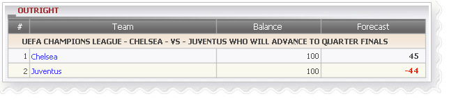

Outright
Definition:
Show agent's winning amount based on postion taking displayed as Balance and the losing amount on each bet that agent might lost displayed as Forecast if member wins that bet.

Outright
- From the figure above, let's take league UEFA CHAMPIONS LEAGUE - Chelsea -vs- Juventus who will advance to Quarter Finals as an example to understand this report.
- Total balance that agent might win based on Position Taking for Chelsea and Juventus = 100 + 100 = 200
- 1 Chelsea: member stake = 200, agent PT is 50%
--> Balance = stake* agent PT = 200 * 50% = 100
--> Forecast = total balance - stake * odds * agent PT = 200 - 200 * 1.55 * 50% = 45
This means agent will win 45.
- 2 Juventus: member stake = 200, agent PT is 50%
--> Balance = stake * agent PT =200*50%=100
--> Forecast = total balance - stake * odds * agent PT = 200 - 200 * 2.44 * 50% = - 44
This means agent will lose 44.